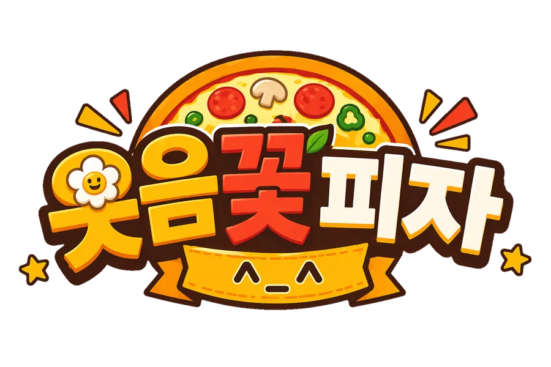
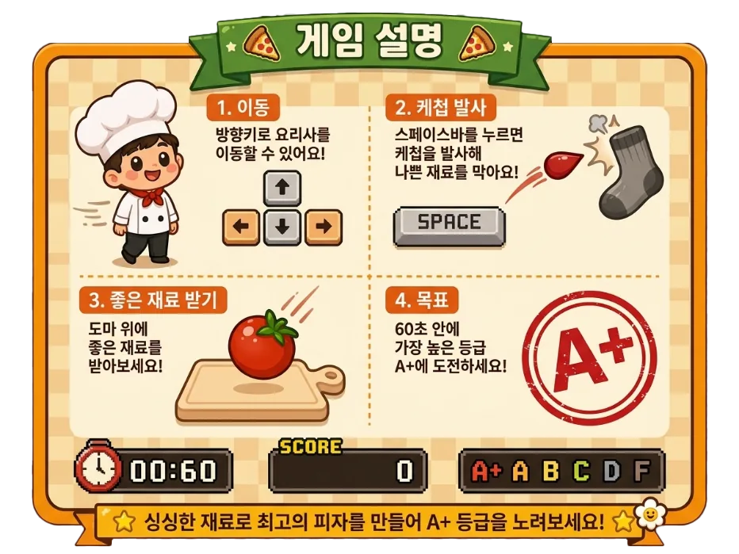
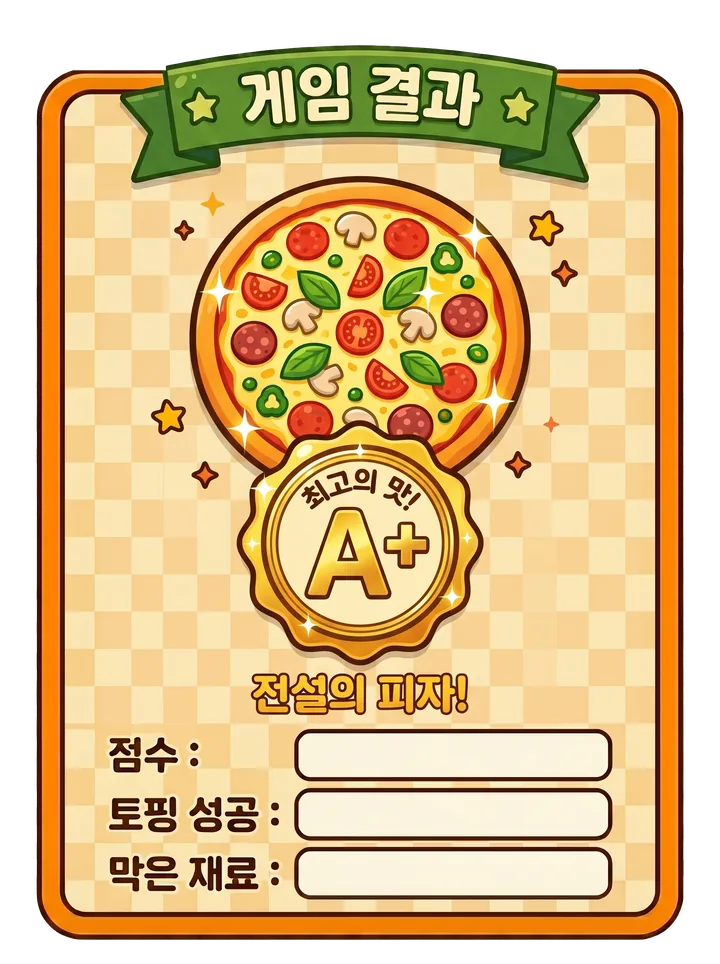
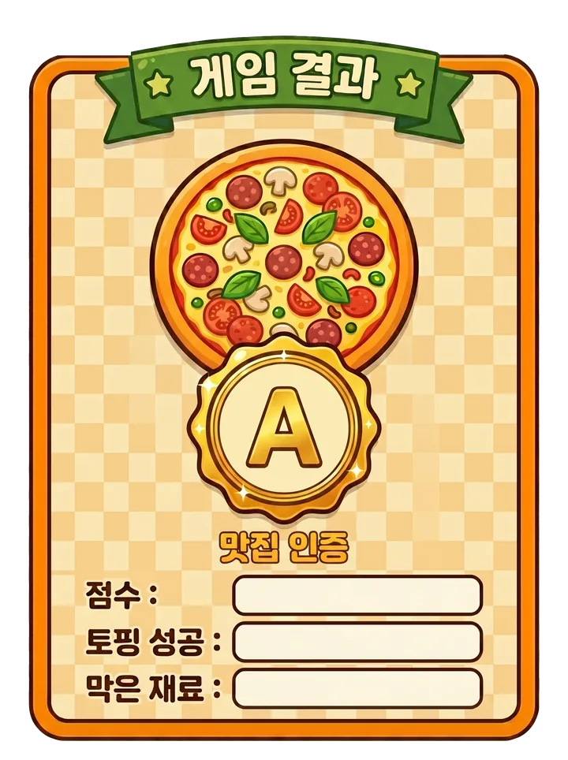
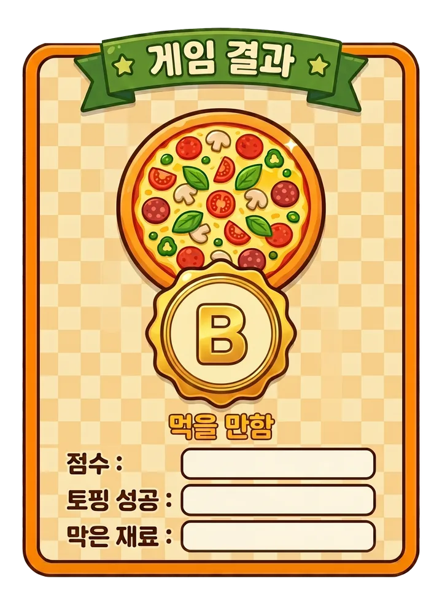
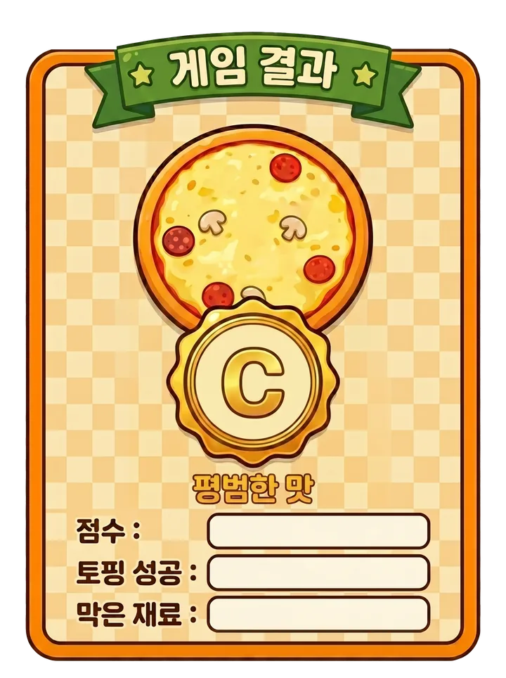
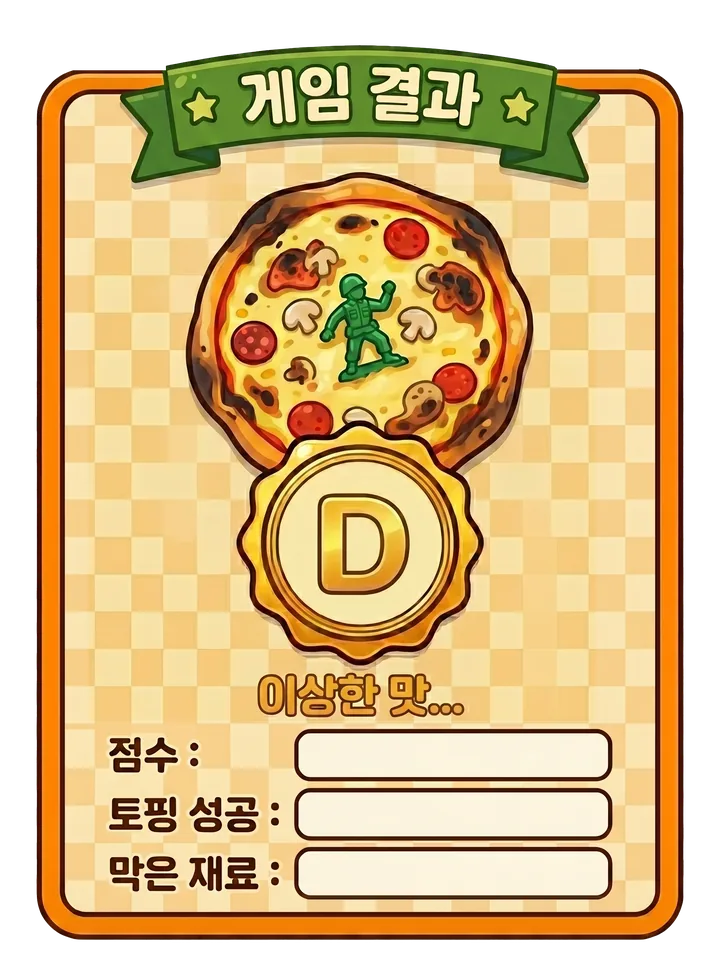
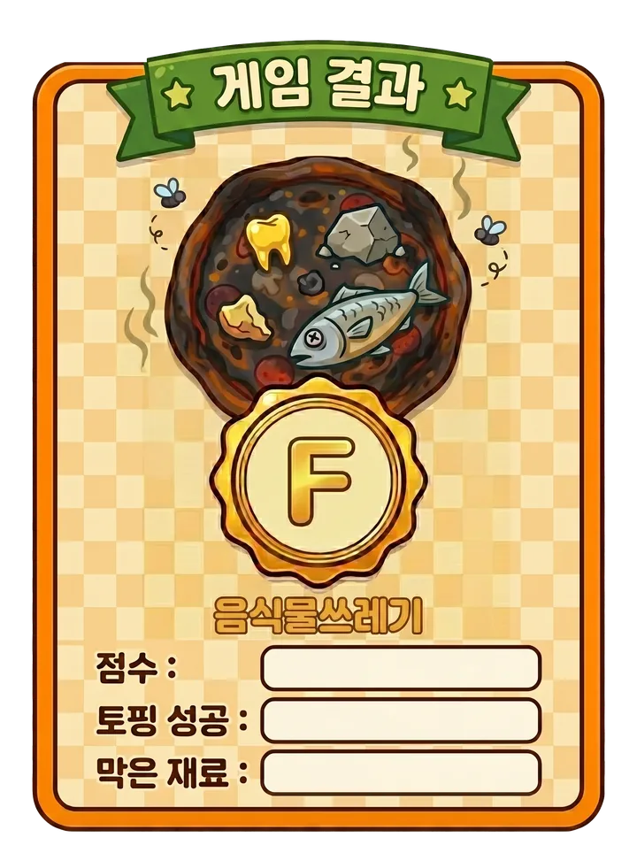

GAME 1 · 2D · 기말
피자 만들기
위에서 떨어지는 재료 중 좋은 재료는 도마로 받고, 나쁜 재료는 케첩을 쏴서 막습니다. 60초가 끝나면 누적 점수로 피자 등급(A+ ~ F)이 정해집니다.
- 세로 화면 2D 슈팅
- 라이프 없음, 60초 단판
- 엔딩 6종
02 · GAME
웃음꽃 피자 · Unity 미니게임 2종
셰프가 되어 떨어지는 재료를 고르는 2D 게임과, 피자 트럭으로 손님이 원하는 피자를 던지는 3D 게임입니다. 기획, 그래픽 소스, 씬 구성, C# 로직, 빌드까지 혼자 만들었습니다.
Unity 원본 C#의 규칙과 수치를 그대로 옮긴 웹 버전입니다. 오른쪽 패널에서 지금 돌아가는 로직을 함께 볼 수 있습니다.


←→ 이동 Space 발사 R 처음으로
GAME 1 · 2D · 기말
위에서 떨어지는 재료 중 좋은 재료는 도마로 받고, 나쁜 재료는 케첩을 쏴서 막습니다. 60초가 끝나면 누적 점수로 피자 등급(A+ ~ F)이 정해집니다.
GAME 2 · 3D · 중간
피자 트럭을 몰고 도시를 돌며 손님 머리 위에 뜬 피자와 같은 종류를 골라 던집니다. Tab으로 피자 3종을 바꾸고, 종류가 맞아야 점수가 오릅니다.
“다 쏘면 이기는 게임”이 되지 않게 하기
갤러그 같은 세로 슈팅은 보이는 대로 쏘는 쪽이 유리합니다. 피자 만들기에서는 매 순간 쏠지 말지를 판단하게 만들고 싶었습니다. 그래서 점수를 한 가지 숫자로만 두고, 행동마다 득실이 다르게 붙도록 정했습니다.
| 상황 | 의미 | 점수 | 처리 위치 |
|---|---|---|---|
| 좋은 재료가 도마에 닿음 | 토핑 성공 | +10 | Ingredient.cs |
| 나쁜 재료를 쏴서 막음 | 방어 성공 | +5 | Bullet.cs |
| 나쁜 재료가 도마에 닿음 | 오염 | −15 | Ingredient.cs |
| 좋은 재료를 쏨 | 재료 낭비 | −10 | Bullet.cs |
좋은 재료 오발에 −10을 둬서 전부 쏘는 전략이 손해가 되게 했습니다. 재료는 색(밝음/탁함)과 실루엣(둥긂/각짐) 두 가지로 구분해 색만으로 판단하지 않아도 되게 했습니다.
04 · BEHIND
기획서에서 시작해 스크립트를 나누고, 테스트하며 숫자를 고친 기록입니다.
기획 단계에서 7개로 나눈 스크립트를 구현하면서 6개로 줄였습니다. 도마 판정용 CuttingBoard는 따로 두지 않고, 도마에 Board 태그만 달아 재료 쪽에서 판정했습니다.
AddScore(±n) ↙총알과 재료가 부딪히면 두 오브젝트 모두 OnTriggerEnter2D가 불립니다. 양쪽에서 점수를 더하면 한 번 맞혔는데 점수가 두 번 들어갑니다. 격추 점수는 Bullet, 안착 점수는 Ingredient만 처리하도록 나눴습니다.
// Bullet.cs — 격추 점수는 여기서만
if (ing.isGood) AddScore(-10); // 좋은 재료 오발
else { AddScore(+5); badShot++; } // 나쁜 재료 격추
Destroy(other.gameObject);
Destroy(gameObject);맞은 순간 총알과 재료를 바로 파괴하기 때문에, 그 오브젝트에 붙은 AudioSource로 재생하면 소리가 끊깁니다. AudioSource.PlayClipAtPoint로 카메라 위치에 따로 재생했습니다. 2D라 거리 감쇠가 없어서 볼륨만 따로 맞췄습니다(오발 0.11, 격추 1.0).
Space를 누르면 셰프 스프라이트를 발사 자세로 바꾸고 0.1초 뒤 되돌립니다. 연속으로 쏠 때 이전 복귀 예약이 먼저 실행되지 않도록 CancelInvoke로 지운 뒤 다시 예약합니다.
GameManager.Elapsed(60 − 남은 시간)를 기준으로 20초마다 생성 간격, 낙하 속도, 좋은 재료 비율을 바꿉니다. 후반으로 갈수록 나쁜 재료가 많아져서 쏴야 할 일이 늘어납니다.
막대 = 나쁜 재료 비율 · 위 숫자 = 좋은 재료 비율
기획서에 적은 값은 초안이었고, 직접 플레이하면서 고쳤습니다.
| 항목 | 기획서 | 구현 | 메모 |
|---|---|---|---|
| 등급 기준 | A+ 400 · A 300 · B 200 · C 120 · D 50 | A+ 480 · A 380 · B 280 · C 180 · D 80 | 기획서에 “플레이테스트 후 평균 = C, 잘하면 A가 되도록 조정”이라고 적어 둔 대로 기준을 올림 |
| 발사 쿨다운 | 0.2–0.3초 | 0.25초 | 범위 안에서 값 하나로 고정. 좋은 재료 오발 감점과 함께 신중하게 쏘도록 유도 |
| 총알 속도 | — | 스크립트 기본 12 → 프리팹 8 | 인스펙터에서 프리팹 값으로 조정 |
| 도마 판정 | CuttingBoard 스크립트 | Board 태그 | 판정할 일이 하나뿐이라 스크립트를 늘리지 않음 |
| 재료 종류 | 좋은 7 · 나쁜 7 | 좋은 6 · 나쁜 4 | 파인애플과 선택 항목으로 둔 나쁜 재료(벌레 · 압정 · 비누 · 신발)는 넣지 않음 |
이동 전 위치를 저장하고, 이동 후 Physics.OverlapSphere로 Road 트리거 안인지 확인합니다. 밖이면 저장한 위치로 되돌립니다. 도로 영역 트리거 하나로 이동 범위를 정합니다.
피자 박스가 Building에 닿으면 가장 가까운 점에서 법선을 구해 Vector3.Reflect로 방향을 바꿉니다. 벽 안에 끼지 않도록 법선 방향으로 0.5만큼 밀어냅니다.
박스를 회전시키면 직진 방향도 같이 돌아갑니다. 이동은 발사 순간의 방향을 월드 기준으로 저장해 쓰고, 회전은 자식 오브젝트(PizzaSpinner)에만 줬습니다.
손님(Target)은 원하는 피자 번호를 가지고 있고, 맞은 박스의 CurrentType과 같을 때만 점수와 이펙트를 냅니다. 틀리면 박스가 그대로 지나갑니다.
60초가 끝나면 점수에 맞는 피자 이미지가 엔딩 패널에 들어가고, 빈칸에 점수 · 토핑 성공 · 막은 재료 수가 채워집니다.





